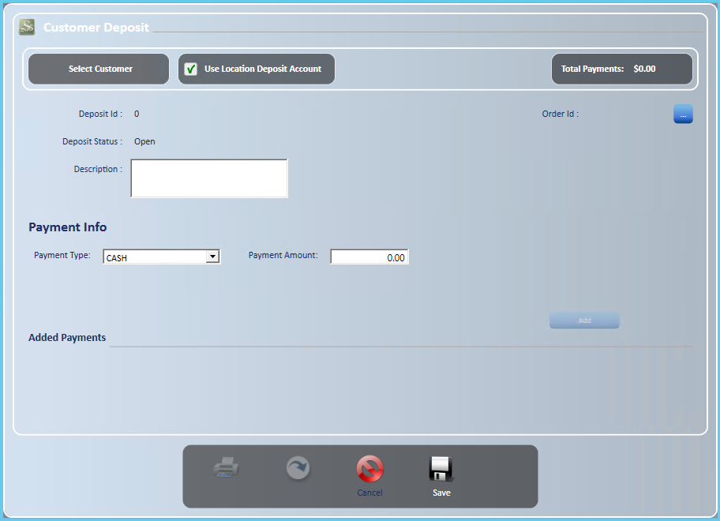
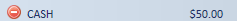
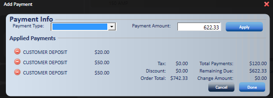
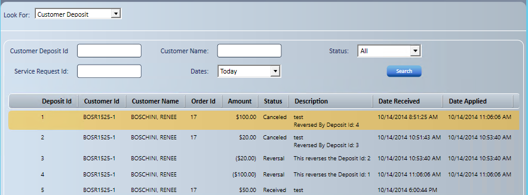
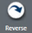
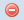

Customer deposits
Use a customer deposit to take one or more deposits on an existing service request. The deposit shows in the Add Payment section of the service request, so you can apply it when you invoice. To start, go to New; Customer Deposit.

Add a deposit
- At Select Customer, enter the customer lookup information.
- Select the customer.
- To use a different customer, search again. You can change the customer only before the deposit is saved.
- Select to the right of Order Id, and select the order to apply the deposit to.
- Enter a description. It is required and limited to 150 characters.
- Enter the payment information.
- Enter a positive amount. Negative amounts are not accepted.
- Customer Deposit is not a payment type on an ROA.
- After each payment is applied, Payment Type goes back to Cash and the amount clears. Pick the payment type again for the next payment.
- Each payment type asks for its own information.
- For card payments, see Electronic Payments. If a card payment fails and you don't enter it manually, you can try again. If you close or cancel with no payment taken, the deposit is marked Canceled and a note is added to its description.
- Select .
- The payment displays under Added Payments.

- Select Save.
- Select Print to print the customer deposit receipt.
- The deposit displays in the Add Payments section of the service request.
Note: You can take multiple deposits or installments, either under one deposit or as multiple deposits.
Refund a deposit
Before you start: Your company must allow deposit refunds.
- On a saved deposit, select Refund. On a partly applied deposit, the button is Refund Unused Amount.
- Confirm the refund.
- Add the refund payments.
- Select Save.

Reprint or find a customer deposit
- Go to Find; Customer Deposit.

- Enter the search criteria you know, and then select Search.
- To the left of Deposit Id, select the option to print or open the customer deposit.
Reverse a customer deposit
- Search for the deposit with the information you have.
- Select the deposit to reverse.
- Hover to the left of Deposit Id and select Open Customer Deposit.
- Select Reverse

. - Enter a Reason for Reversal. It is required.
- Select Process Reversal.
- A new Deposit Id is created, and its description references the original Deposit Id.
Note: Only a deposit in Received status can be reversed. A reversed deposit or a reversal can't be reversed again.
-
- If the deposit was paid by a check processed electronically, you are asked how to handle the check. Select Yes to reverse without an electronic check reversal, No to change the check payment to Cash so you can refund from the drawer, or Cancel to stop.
- Card payments are voided or refunded. See Electronic Payments. If your store sets the System Setting CD with Electronic Payment Reversal not to reverse electronically, void or refund the card outside TireWorks HD.
- If you select print, the original Deposit Id prints with the reversal information.
Print a reversal
- Go to Find; Customer Deposit.
- Enter the search criteria.
- The reversal displays with a status of Reversal.
- The original deposit displays with a status of Reversed.
- Hover to the left of the reversal and select Print.
Note: You can delete a payment from a customer deposit by selecting 